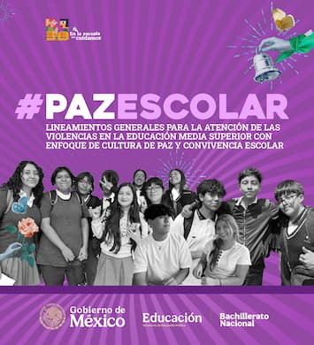
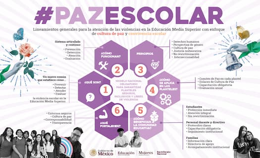

Lineamientos Generales para la Atención de la Violencia en la Educación Media Superior con Enfoque de Cultura de Paz y Convivencia Escolar

Son el modelo nacional obligatorio que establece los criterios para prevenir, atender y erradicar la violencia en la Educación Media Superior. Se fundamentan en una perspectiva de derechos humanos, interseccional y de género, con el propósito de fortalecer una cultura de paz, la corresponsabilidad y la transparencia en los procesos. Su objetivo es que los planteles se constituyan como espacios seguros, respetuosos e inclusivos. Descargue y consulte los Lineamientos Generales para la Atención de la Violencia en la Educación Media Superior con enfoque de Cultura de Paz y convivencia escolar como referente para promover la paz escolar en su plantel.
Descargar boletín

Materiales para difusión y consulta

Infografía de #PazEscolar
Infografía de #PazEscolar con los lineamientos clave para construir espacios escolares seguros, inclusivos y libres de violencia.
Descarga infografía

Banners
Material gráfico de #PazEscolar listo para su difusión en espacios educativos.